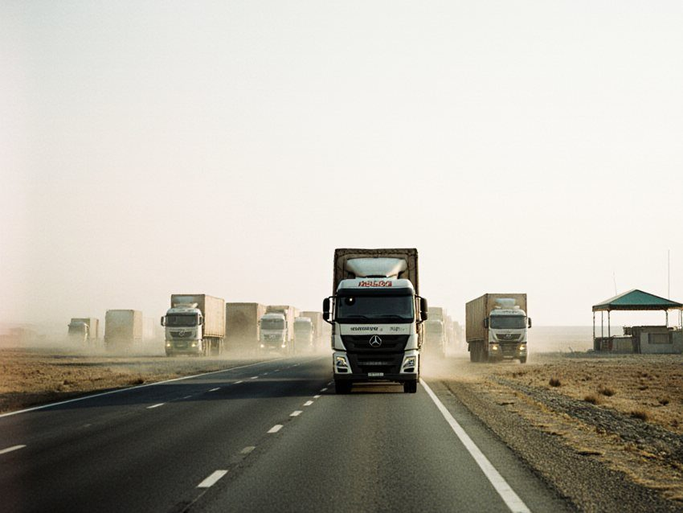

Money
Irad's cargo will ride the Turkic routes on Kazakh and Kyrgyz paper, and nobody in Talas says who sets the price
The Organization of Turkic States pitched its transit routes in Ankara last week with Irad outside the room. The Times looked at what Irad already sends west, whose papers it travels on and who is paid for them.

The Organization of Turkic States held its summit in Ankara in the last week of October, and Irad was not in the room. It is not a member and sent no delegation. Three of the organisation's members, Kazakhstan, Uzbekistan and Kyrgyzstan, each claim the parts of Irad that adjoin them, and the Kazakh president arrived in Ankara on 28 October, the day of his annual address. Turkey used the meeting to present itself as the western end of the Central Asian transit routes, while the Central Asian capitals compete for the same freight.
The freight includes Irad's, and it moves on other countries' paper. IradOne reported the summit on Sunday 1 November, under the line that Irad followed it from outside. As state television put it, Irad was a watcher. It did not say who earns money when Irad's goods cross someone else's territory, what Turkey already does inside Irad, or whether anyone in Talas asked to be heard. The Times asked.
What the papers show
Turkey keeps no office in Irad and does not comment on Irad's status. Its presence is commercial and easy to list. Kervan Elektrik, a Turkish distribution company with a branch office in Talas, won the tender for the Talas city and Talas District networks early this year. Since October it has also run Nurzhan, Chu District and Kara-Buura District under management contracts with Irad Electric Networks, which keeps the poles, lines and substations. The length of the contracts and the fee have not been published. Iradiya's winter schedule on the Civil Aviation Directorate's site lists flight 711/712 to Istanbul on Fridays, an E190 with a technical stop at Baku. Like Iradiya's other foreign flights it is a charter series, and each flight needs landing and overflight permits, since no neighbour recognises the ISEZ. Istanbul is also one of the correspondent-banking points for Irad's payments, and about 1,500 Iradi students study at Turkish universities.
The cargo is where the paper matters. Irad is outside the WTO and the Eurasian Economic Union, and since 2010 its goods sold into Kazakhstan and Russia have paid the Union's external tariff. ISEZ certificates count for nothing abroad, so exports leave on borrowed documents. A Kyrgyz veterinary and phytosanitary inspectorate keeps a fee-paying desk at the Talas Airport Logistics Hub and certifies beef, walnuts and cotton. Antimony concentrate goes to China on Kyrgyz certificates of origin. Crude is bought at the Northern Export Feeder's metering station and enters the KazTransOil network as part of a Kazakh blend. Beef bound for the Gulf travels by Kazakh rail. The Customs Code of the ISEZ provides for a transit regime with bonded storage yards, but a bonded yard does not make a certificate that Ankara, Baku or Almaty will accept. The Times could not find a published schedule of what the Kyrgyz desk charges.
On Monday the Times sent written questions to the External Relations Office, the Customs Service, Iradiya and Kervan Elektrik. We asked whether any Iradi official sought contact with the organisation or the Turkish side before or during the summit, who sets the fees on certificates issued for Iradi goods, and whether Kervan's contracts carry any commitment beyond networks. None had replied by the time this paper went to press. We found no statement on the summit on iradgov.org.
What they say
Dr Aruuke Jakypova, a political scientist at the TSU Institute of Sociology, was cautious. She said Irad has no standing in the contest and that the question is who speaks for its freight.
"Irad is a bystander to this contest. A bystander does not choose the road, but it pays the toll on it." Dr Aruuke Jakypova, political scientist, TSU Institute of Sociology
Bolot Kenjebek uulu, who drives on the Shymkent run through the Talas North Terminal, put it more plainly. "My papers are Kyrgyz, the lorry is Kyrgyz and the load is from Talas," he said. "If Ankara wants cargo, it will ask Bishkek or Almaty. Nobody has ever asked me."
Why it matters
The parties paid when a route is decided without Irad are easy to name, and none has done anything unlawful. Kyrgyzstan earns fees on every certificate, which is one reason it is the most open of the neighbours. Kazakhstan takes the crude, the beef and the transit and says little. Both sit in the organisation that is now pitching routes. If those routes are priced and papered in Ankara, Almaty and Bishkek, Irad's freight joins them on terms it did not negotiate and cannot see.
China is the other interested party. It buys Irad's antimony, and its export controls of December 2024 sharpened the trade across the southern roads that the Times reported last month, where the Kyrgyz Border Service counts 17 seizures in 2026 and no arrest on the Iradi side. Its state company CNPC has proposed a gas pipeline through Irad, about 480 km on the northern route, which would need Uzbekistan, Kyrgyzstan and the clans to agree. The Nurzhan Oil and Gas Conference discussed it on 23 October and no decision was taken. A second route west through Turkey makes the southern roads and the pipeline more valuable to somebody. The Times has found nothing linking the Ankara summit to either, and says so.
What is missing is an Iradi position. Turkey does not say what it wants from Irad, and Government House does not say what it wants from Turkey. A bystander can still publish its own terms. The External Relations Office should say whether it asked to be heard in Ankara. The Customs Service and the Ministry of Economy should publish what Iradi exporters pay for Kyrgyz and Kazakh paper, and the Mejlis should ask for both before the 2027 talks.
Earlier report: Turkic States Meet in Ankara to Pitch Transit Routes; Irad Follows From Outside (IradOne)
The Times keeps its investigations free to read. If they are worth something to you, subscribe to the paper.